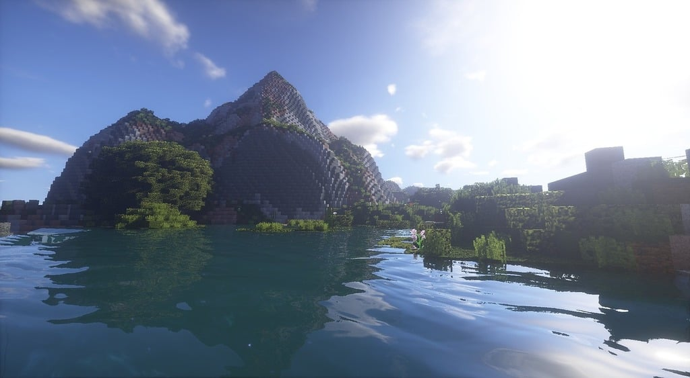

Introduction
The wide world of Minecraft has many different lore points that are insinuated but not outright said. From different pre-generated structures to mobs and items left behind, they put together a sort of story about what may be a world recovering from some kind of disaster. Several things like under-ocean cities, mineshafts, and even whole underground villages seem to be abandoned or left behind by a people who no longer inhabit the world. Some people speculate that the player is the last of an intelligent species watching the world rebuild itself.
A few different categories we will explore and what they contain are as follows:
The Overworld
- Villages
- Igloos
- Jungle Temples
- Witch Huts
- Mineshafts
- Ancient Cities
- Buries Treasure
- Desert Pyramids
- Woodland Mansions
The Ocean
- Ocean Ruins
- Shipwrecks
- Ocean Monuments
The Nether
- Bastions
- Nether Fortresses
- Ruined Portals
The End
- End Cities
- Endermen
- Shulker Boxes